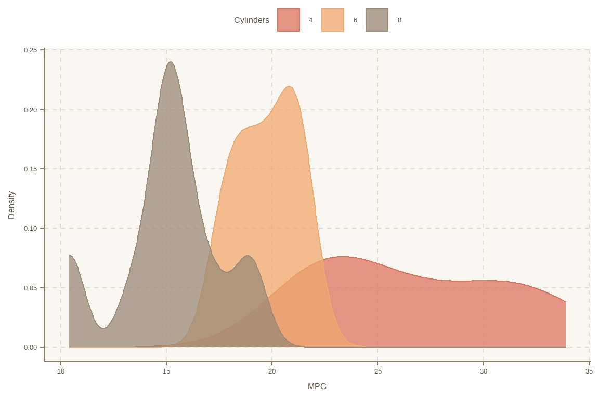

第 28 章 懒人系列
R社区上很多大神，贡献了很多非常优秀的工具，节省了我们的时间，也给我们的生活增添了无限乐趣。我平时逛github的时候时整理一些，现在分享出来供像我一样的懒人用，因此本文档叫“懒人系列”。欢迎大家补充。
28.1 谁帮我敲模型的公式
\[ \text{mpg} = \alpha + \beta_{1}(\text{cyl}) + \beta_{2}(\text{disp}) + \epsilon \]
\[ \text{mpg} = 34.66 - 1.59(\text{cyl}) - 0.02(\text{disp}) + \epsilon \]
28.2 模型有了，不知道怎么写论文？
## We fitted a linear model to predict Sepal.Length with Species.The model's explanatory power is substantial (R2 = 0.62, adj. R2 = 0.61). The model's intercept is at -1.01. Within this model:
##
## - The effect of Species [versicolor] is positive and can be considered as significant (beta = 1.12, 95% CI [0.88, 1.37], p < .001).
## - The effect of Species [virginica] is positive and can be considered as significant (beta = 1.91, 95% CI [1.66, 2.16], p < .001).28.3 模型评估一步到位

28.4 统计描述不用愁
library(gtsummary)
## https://github.com/ddsjoberg/gtsummary
trial %>%
select(trt, age, grade, response) %>%
tbl_summary(by = trt,
missing = "no") %>%
add_p() %>%
add_overall() %>%
add_n() %>%
bold_labels()| Characteristic | N | Overall, N = 200 | Drug A, N = 98 | Drug B, N = 102 | p-value |
|---|---|---|---|---|---|
| Age, yrs | 189 | 47 (38, 57) | 46 (37, 59) | 48 (39, 56) | 0.7 |
| Grade | 200 | 0.9 | |||
| I | 68 (34%) | 35 (36%) | 33 (32%) | ||
| II | 68 (34%) | 32 (33%) | 36 (35%) | ||
| III | 64 (32%) | 31 (32%) | 33 (32%) | ||
| Tumor Response | 193 | 61 (32%) | 28 (29%) | 33 (34%) | 0.6 |
28.5 列名太乱了
fake_raw <- tibble::tribble(
~id, ~`count/num`, ~W.t, ~Case, ~`time--d`, ~`%percent`,
1L, "china", 3L, "w", 5L, 25L,
2L, "us", 4L, "f", 6L, 34L,
3L, "india", 5L, "q", 8L, 78L
)
fake_raw  安装后，然后这两个地方点两下，就发现你的代码整齐很多了
安装后，然后这两个地方点两下，就发现你的代码整齐很多了28.8 正则表达式太南了
## [1] "^[a-z]{4}-\\d{4}-[a-z]{2}\\d$"有了它，妈妈再也不担心我的正则表达式了
28.9 颜控怎么配色？
mtcars %>%
mutate(cyl = factor(cyl)) %>%
ggplot(aes(x = mpg, fill = cyl, colour = cyl)) +
geom_density(alpha = 0.75) +
labs(fill = 'Cylinders', colour = 'Cylinders', x = 'MPG', y = 'Density') +
legend_top()
用完别忘了
28.11 犹抱琵琶半遮面
##https://github.com/EmilHvitfeldt/gganonymize
library(ggplot2)
library(gganonymize)
ggg <- ggplot(mtcars, aes(as.factor(cyl))) +
geom_bar() +
labs(title = "Test title",
subtitle = "Test subtitle, this one have a lot lot lot lot lot more text then the rest",
caption = "Test caption",
tag = 1) +
facet_wrap(~vs)
gganonomize(ggg)
你可以看我的图，但就不想告诉你图什么意思，因为我加密了
28.15 多张图摆放
library(patchwork)
p1 <- ggplot(mtcars) + geom_point(aes(mpg, disp))
p2 <- ggplot(mtcars) + geom_boxplot(aes(gear, disp, group = gear))
p3 <- ggplot(mtcars) + geom_smooth(aes(disp, qsec))
p1 + p2 + p3
28.16 缺失值处理
library(naniar)
##https://github.com/njtierney/naniar
airquality %>%
group_by(Month) %>%
miss_var_summary()28.18 画图颜色好看不
scales也是大神的作品，功能多多

先看看颜色，再选择